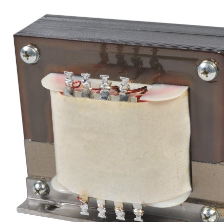
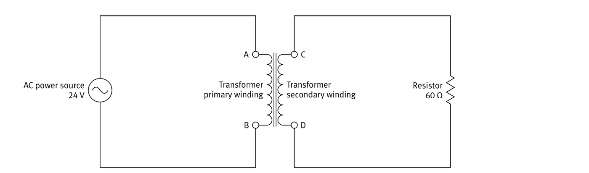
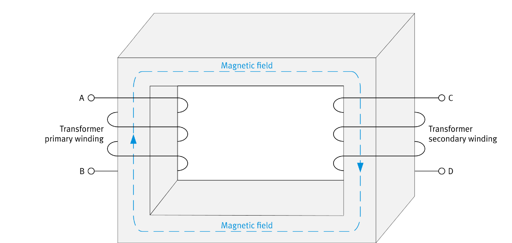
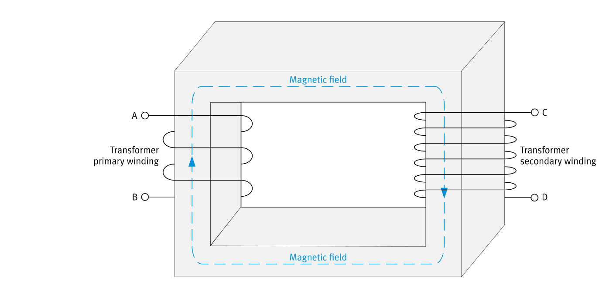
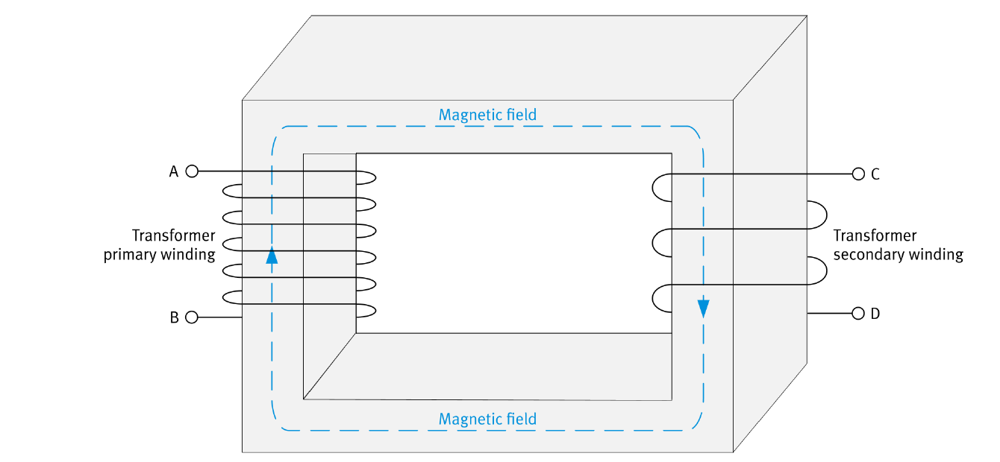
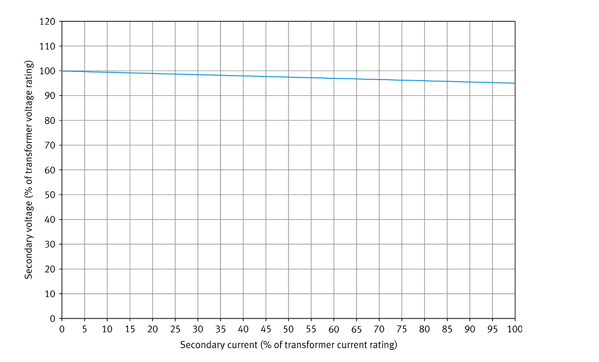
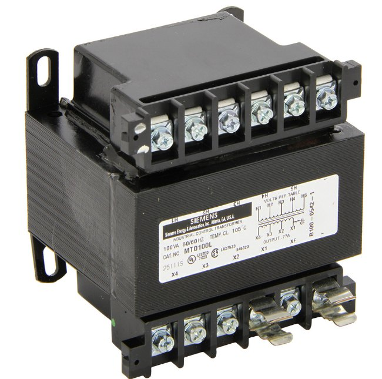
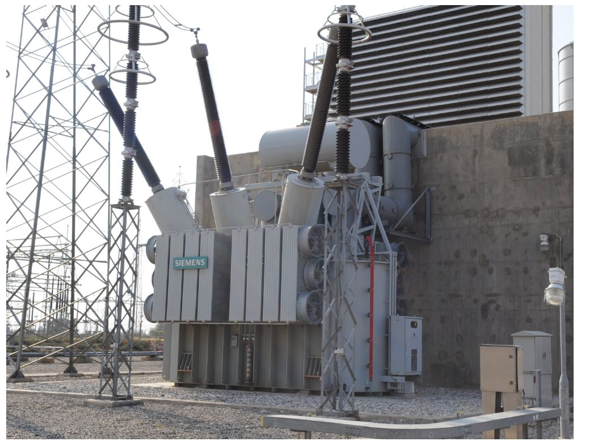

// Two coupled windings · Turns ratio · Step-up & step-down · Voltage regulation
A transformer is essentially two inductors, coils of wire, wound around a common core of ferromagnetic material such as iron. One coil is the primary winding and the other is the secondary winding. The two windings are electrically isolated from each other, so no current flows directly between them.
The primary winding is connected to the ac power source and the secondary winding is connected to the load. Because a transformer is a bidirectional device, either winding can be used as the primary or the secondary.


The turns ratio compares the number of turns in the primary winding, NPri, with the number in the secondary winding, NSec, written NPri : NSec. It sets the ratio between the transformer's input and output values. The two windings in the detailed view have the same number of turns, so this transformer's turns ratio is 1 : 1.

The power at each winding is the product of its voltage and its current. Using the values from the 1 : 1 circuit:
A 1 : 1 transformer leaves the voltage and current unchanged, but most transformers have a turns ratio other than 1 : 1. These are called step-up and step-down transformers, and they trade voltage for current between the primary and the secondary.

Here the secondary winding has twice the turns of the primary, a turns ratio of 1 : 2. Connected to the same 24 V, 60 Ω circuit:

Here the primary winding has twice the turns of the secondary, a turns ratio of 2 : 1. Connected to the same 24 V, 60 Ω circuit:

In a real transformer the secondary voltage drops as the secondary current rises, that is, as the load becomes heavier. Voltage regulation is the transformer's ability to hold the secondary voltage steady as the secondary current increases. The better the regulation, the smaller the drop.
Used where a steady voltage or current is needed. It has a low voltage and current rating, so it handles low power, and it is often used to step down the voltage in solenoid and relay circuits. It is generally well insulated.
Used to step up or step down the voltage of ac transmission lines. It has high voltage, current, and power ratings. Because a transformer is more efficient below its maximum ratings, a power transformer is often rated higher than necessary to keep losses low.
Built for maximum electrical insulation. It prevents electric shocks, suppresses electrical noise, and transfers power between circuits that must not be connected, such as around sensitive hospital equipment. It usually has a 1 : 1 turns ratio, so it barely changes the voltage and current.

